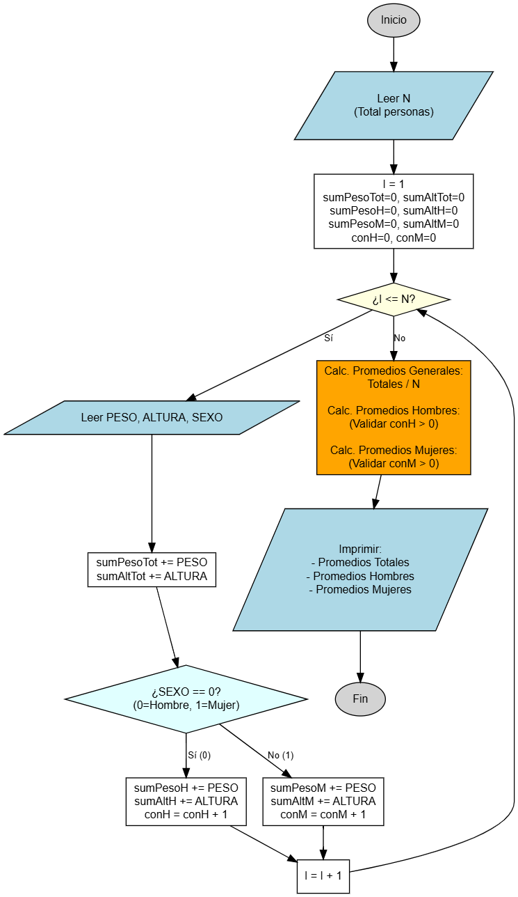

Promedios de Población por Sexo
Clasificando datos dentro de un ciclo.
En este ejercicio ampliarás la lógica de recolección de datos. No solo calcularás el promedio general de una población, sino que deberás filtrar y acumular la información en dos grupos separados (Hombres y Mujeres) para obtener estadísticas específicas por género. Es un excelente entrenamiento para el uso de acumuladores y contadores condicionales.

Objetivo
Crear un programa que lea el peso, la altura y el sexo de N personas. Al finalizar la lectura, deberá calcular e imprimir:
- El promedio de peso y altura de la población total.
- El promedio de peso y altura exclusivo de la población masculina.
- El promedio de peso y altura exclusivo de la población femenina.
Variables a Declarar
- N: tipo entero (
int) - Número total de personas en la encuesta. - PESO: tipo real (
double) - Peso de la persona actual. - ALTURA: tipo real (
double) - Altura de la persona actual. - SEXO: tipo entero (
int) - Sexo de la persona (0 para Hombre, 1 para Mujer). - Acumuladores: Variables para sumar pesos y alturas por separado (ej.
sumPesoH,sumPesoM, etc.). - Contadores: Variables para contar cuántos hombres (
conH) y cuántas mujeres (conM) se ingresaron.
Operaciones a Realizar
- Leer el número de personas
N. - Iniciar un ciclo que se repita
Nveces. - En cada vuelta:
- Leer Peso, Altura y Sexo.
- Si Sexo es 0 (Hombre): Sumar peso a
sumPesoH, altura asumAltHe incrementarconH. - Si Sexo es 1 (Mujer): Sumar peso a
sumPesoM, altura asumAltMe incrementarconM.
- Al terminar el ciclo, calcular los promedios (Suma / Cantidad).
(Ojo: Validar si el contador es mayor a 0 antes de dividir para evitar errores). - Imprimir los 6 promedios resultantes.
Resultado Esperado
Ingrese numero de personas: 3 Datos persona 1 (Peso, Altura, Sexo 0=H/1=M): 80 1.80 0 Datos persona 2 (Peso, Altura, Sexo 0=H/1=M): 60 1.60 1 Datos persona 3 (Peso, Altura, Sexo 0=H/1=M): 70 1.75 0 --- ESTADISTICAS --- Promedio Peso General: 70.0 Promedio Altura General: 1.7166... Promedio Peso Hombres: 75.0 Promedio Altura Hombres: 1.775 Promedio Peso Mujeres: 60.0 Promedio Altura Mujeres: 1.60